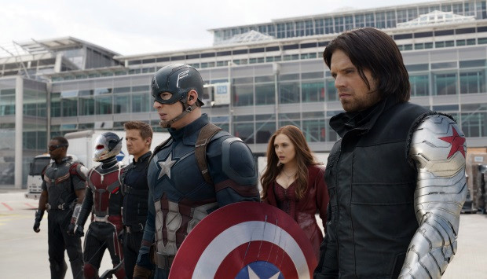

Kapitan Ameryka: Wojna bohaterów
Kapitan Ameryka: Wojna bohaterów (2016) -filmweb

W filmie "Kapitan Ameryka: Wojna bohaterów", będącym bezpośrednią kontynuacją hitowego
"Avengers: Czas Ultrona", Steve Rogers aka Kapitan Ameryka staje na czele drużyny Avengers,
by ponownie ocalić ludzkość przed zagładą. W czasie kolejnej międzynarodowej akcji
z udziałem superbohaterów ponownie dochodzi do strat w ludności cywilnej.
Rosną więc naciski polityczne, by poddać herosów systemowi nadzoru i utworzyć organ
decydujący o stopniu ich zaangażowania w działania militarne.
Sytuacja ta poważnie wpływa na atmosferę panującą wśród Avengers,
którzy starają się obronić świat przed nowym, nikczemnym nieprzyjacielem.
Strona główna